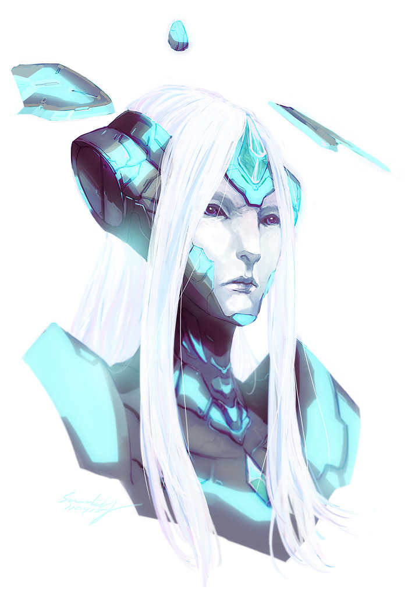

So yeah this is probably the most realistically accurate artwork I’ve done for my muse so far. Her feature was actually designed based on a combination of a Promethean head study (p.146) and one of the discarded Didact head design (p. 152) appeared in <Awakening: The Art of Halo 4>.
Armorless version (head study) under the cut.